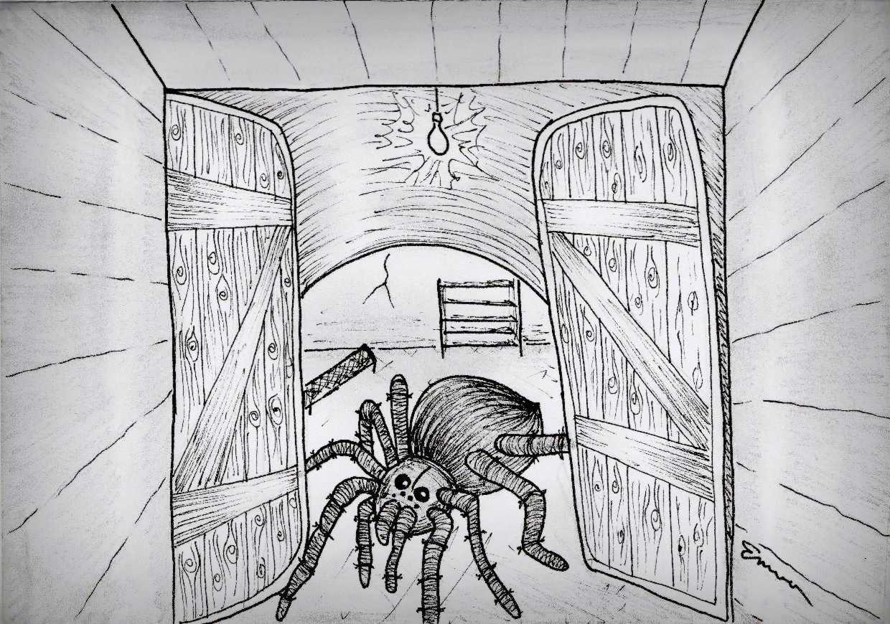

« předchozí článek | obsah čísla | následující článek »
„Pomoc, ségra, ve sklepě je pavouk. Odstraň ho, ohrožuje Micku.“
I když se pavouků hodně bojím, tak jsem se rozhodla, že Micce pomůžu. Vzala jsem si botu a rozhodla se, že pavouka zabiju botou.
Duševně i psychicky jsem se připravila. Obula jsem se a šla do sklepa. Šla jsem po tmavých strmých schodech. Bála jsem se. Ale odhodlání zachránit Micku mě vedlo dál.
Šla jsem po tmavých strašidelných schodech do tmavého a ještě strašidelnějšího sklepa. Konečně jsem sešla po schodech dolů. Nahmatala jsem vypínač a rozsvítila. Sklep už tak strašidelně nevypadal. Podivila jsem se, že jsem se mohla tak bát. Teď mi to tak strašidelný nepřipadalo.
Odhodlala jsem se a šla dál. Otevřela jsem dveře a hledala Micku. Botu jsem měla připravenou v ruce, kdybych toho pavouka náhodou viděla.
Jak koukám, tak Micku nikde nevidím. Už jsem si myslela, že si ze mě sestra udělala srandu.
Ještě jsem se naposledy koukla po Micce, a když jsem ji nikde neviděla, tak jsem šla pryč.
Otevřela jsem dveře a šla po schodech nahoru. Když už jsem byla skoro nahoře, tak jsem uslyšela strašné mňoukání. Otočila jsem se a rozeběhla dolů. Otevřela dveře a běžela do sklepa.
Vtom vidím Micku. Přišla jsem k ní, popadla ji a koukám, čeho se tak lekla. Ale ať koukám, jak koukám, nic nevidím. Už se chystala, že půjdu pryč...
Ale když jsem se otočila, tak jsem za sebou uviděla takový divný stín. Hodně strašidelný stín. Nevěděla jsem, co to je, ale hrozně jsem se bála. Vypadalo to tak strašidelně. Bylo to hrozný, hrozně jsem se bála. Nevěděla jsem, co dělat.
Otočila jsem se a za sebou jsem uviděla velkého černého pavouka!
Jak si tak toho pavouka v zděšení prohlížím, tak jsem si všimla, že je nějaký divný. Na pavouka byl až moc velký, až moc divně velký.
Hodně jsem se ho bála, ale odhodlala jsem se. Přišla jsem k pavoukovi blíž. Dokonce jsem se odhodlala a šáhla jsem na něj. Zdál se mi dost divný. Nikdy jsem netušila, že je pavouk tak měkký. A že tím, jak je měkký, připomíná plyšáka.
Počkat – ten pavouk mi nepřipomíná plyšáka. Ten pavouk je plyšák! To určitě udělala ségra. Chtěla mě postrašit.
Vzala jsem Micku a šla pryč.
A jak tak jdu, tak jsem uviděla na dveřích divně velkého pavouka. Tentokrát byl ten pavouk opravdový. Vzala jsem nohy na ramena a utíkala ze sklepa.
„Ááááá! Pomoc, ségra, zbav mě toho pavouka!“
